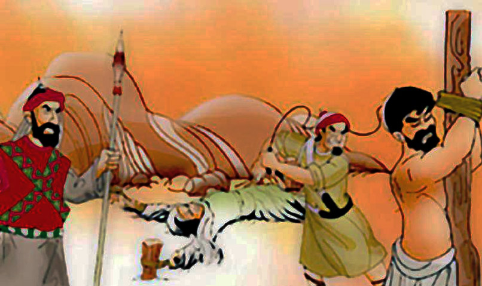
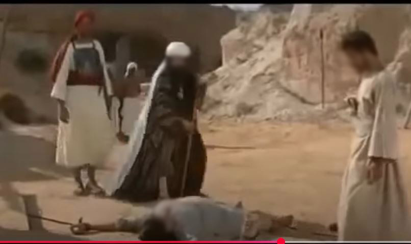
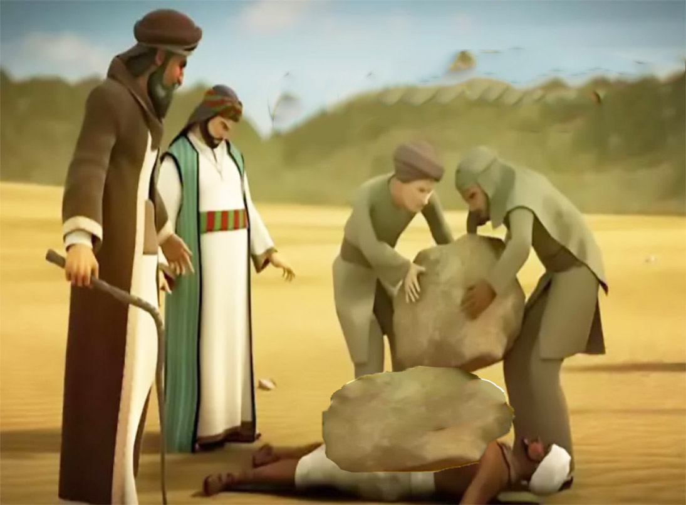

لماذا عذبوا؟ دوافع الظلم 😠

بعد أن بدأ نور الإسلام ينتشر خفية وجهراً، لم تقف قريش مكتوفة الأيدي. لقد رأت في هذه الدعوة تهديداً مباشراً لسلطتها الدينية التي قامت على عبادة الأصنام، ومكانتها الاقتصادية المستفيدة من الحج إليها، ونظامها الاجتماعي القائم على الطبقية والعنصرية.
لقد أرادوا إخماد هذا النور قبل أن يتسع، فبدأوا حملة منظمة من التعذيب والتنكيل ضد المسلمين الأوائل، وخاصة المستضعفين منهم الذين لا عشيرة تحميهم.
أساليب وحشية لا تُنسى 🔥

تنوعت أساليب التعذيب التي مارستها قريش، وكانت تتسم بالوحشية والقسوة المفرطة. لم يكن هناك تفريق بين رجل وامرأة، شيخ أو شاب، عبد أو حر. كان كل من يجهر بإسلامه عرضة لأشد أنواع الأذى:
- **الضرب المبرح:** كانوا يضربونهم بالسياط والعصي ضرباً مبرحاً حتى ينهكوا.
- **التجويع والعطش:** يُحرمون من الطعام والشراب لأيام تحت أشعة الشمس الحارقة.
- **الكي بالنار والجمر:** من أبشع أنواع التعذيب، حيث كانوا يضعون الجمر الملتهب على أجسادهم أو يكُونهم بالنار.
- **السحب على الرمال الساخنة:** كانوا يجرّونهم على الرمضاء (الرمال الحارة جداً) أو الحصى الحادة مما يتسبب في سلخ جلودهم.
- **وضع الصخور الثقيلة:** يُلقون المسلم على ظهره في حر الصحراء ويضعون صخرة عظيمة على صدره ليُعذب بالحرارة والثقل معاً.
بطولات الصابرين 🌟
في خضم هذا العذاب، بزغت قصص صمود وإيمان لا مثيل لها، خلدها التاريخ بمداد من نور:
آل ياسر (سمية، ياسر، عمار)

كانت عائلة **آل ياسر** من أشد من تعرض للتعذيب. كانوا يُخرجون إلى رمضاء مكة في شدة الحر. **سمية**، أول شهيدة في الإسلام، قتلت على يد أبي جهل بحربة في قُبلها لرفضها ترك دينها. زوجها **ياسر** مات تحت التعذيب أيضاً. أما ابنهما **عمار**، فقد عُذب بأنواع شتى، وكان النبي صلى الله عليه وسلم يمر عليهم ويدعو لهم قائلاً: **"صَبْرًا آلَ يَاسِرٍ فَإِنَّ مَوْعِدَكُمُ الْجَنَّةُ."**
بلال بن رباح

كان الصحابي الجليل **بلال بن رباح**، مؤذن الرسول، عبداً لأمية بن خلف الذي كان يخرجه وقت الظهيرة ويطرحه على الرمضاء في حر مكة الشديد، ويضع على صدره صخرة عظيمة، ويقول له: "لا تزال هكذا حتى تموت أو تكفر بمحمد". فما كان من بلال إلا أن يكرر كلمته الخالدة: **"أَحَدٌ أَحَدٌ!"** حتى جاء أبو بكر الصديق فاشتراه وأعتقه.
خباب بن الأرت

كان **خباب بن الأرت** رضي الله عنه حداداً، وقد تعرض لتعذيب شديد من سادته. كانوا يلقونه على الجمر المشتعل ويضغطون على ظهره حتى لا يستطيع الحراك، ويطفئون الجمر بشحم ظهره. ورغم كل هذا، لم يتنازل عن إيمانه، بل ازداد ثباتاً وقوة. قصته شاهدة على مدى ما يمكن أن يتحمله الإنسان في سبيل عقيدته.
نساء مؤمنات (الزنيرة، لبينة، النهدية وابنتها)

لم ينجُ النساء من التعذيب الوحشي. فمنهن **الزنيرة** التي عُذبت حتى فقدت بصرها، فقالت قريش: "أصابها اللات والعزى!" فردت قائلة: "كذبتم! ما أصابني إلا الله". ثم رد الله عليها بصرها. و**لبينة**، و**النهدية وابنتها**، وغيرهن كثيرات عانين الأمرين. وقد قام أبو بكر الصديق رضي الله عنه بإنفاق ماله لتحرير العديد من هؤلاء الإماء المعذبات.
دروس وعبر خالدة ✨
مرحلة تعذيب قريش للمسلمين الأوائل لم تكن مجرد صفحات مؤلمة في التاريخ، بل كانت دروساً عظيمة للأجيال. نستلهم منها:
- **عظمة الإيمان والثبات:** كيف يمكن للعقيدة الراسخة أن تمنح الإنسان قوة خارقة لمواجهة أشد أنواع الألم.
- **قيمة التضحية:** أن الجنة لا تُنال إلا بالصبر والتضحية في سبيل الله.
- **دور المستضعفين:** أن النصر ليس حكراً على الأقوياء أو ذوي السلطة، بل الإيمان الصادق هو مفتاح النصر.
- **صبر النبي صلى الله عليه وسلم:** كان يرى عذاب أصحابه ولا يملك لهم إلا الدعاء، وهو درس في الصبر على البلاء.
- **نور الحق:** أن الحق لا يمكن أن ينطفئ مهما حاول الطغاة إخماده، فالله متم نوره ولو كره الكافرون.
إن قصص هؤلاء الأبطال المجهولين في الأرض المعروفين في السماء، تبقى نبراساً يهدينا في كل زمان ومكان.